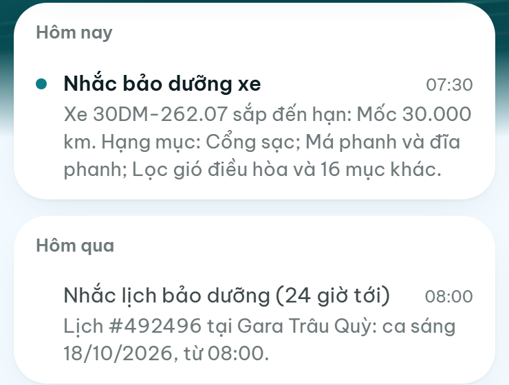
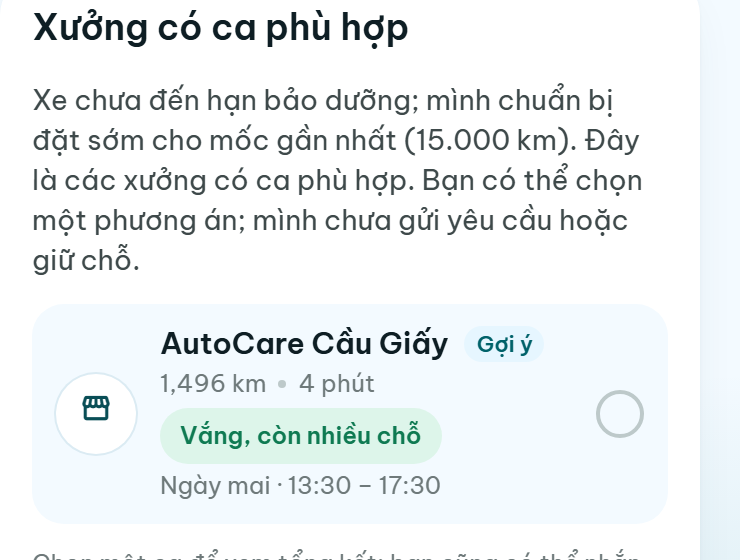
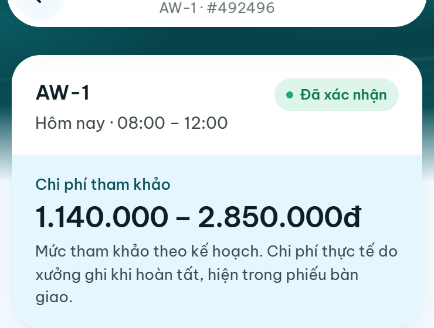
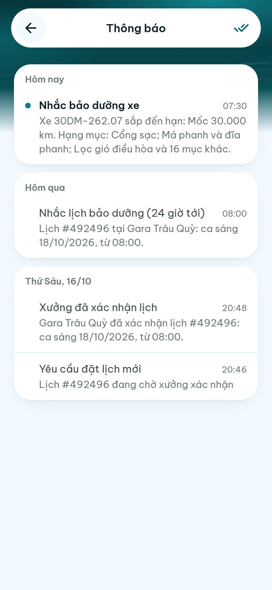
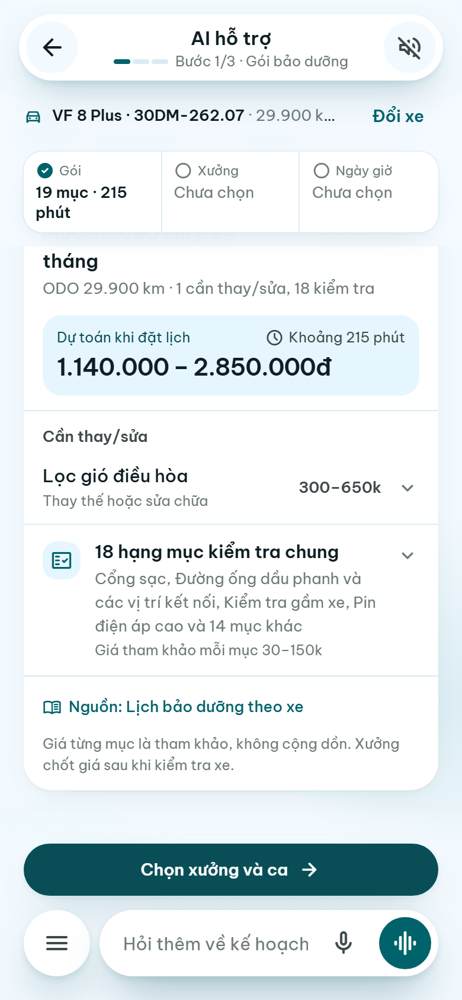
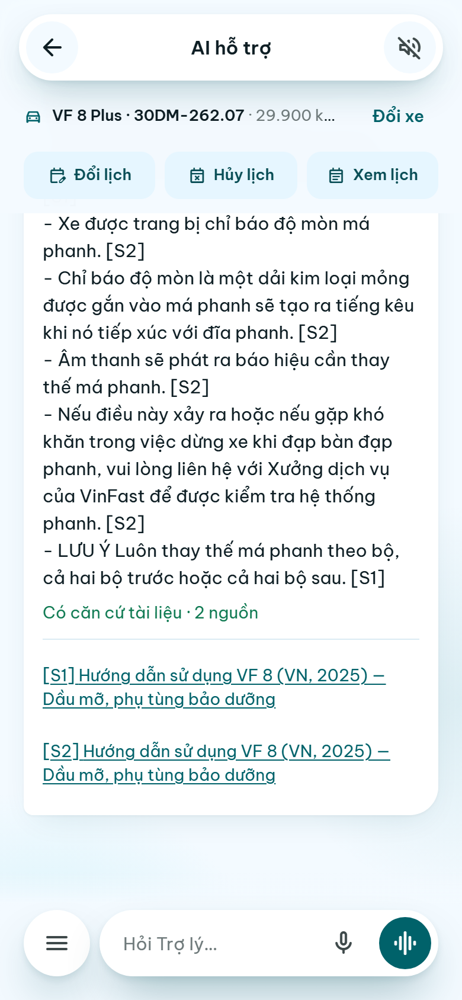
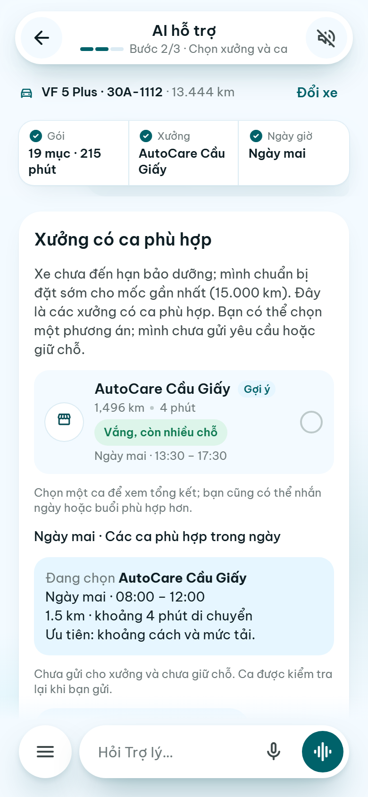
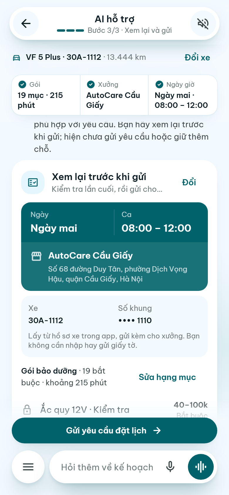
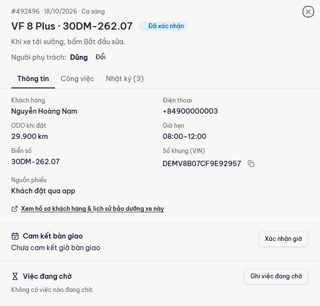

Bận việc
Lịch cá nhân kín
Hỏi xưởng
Chưa chọn được ca
Đổi kế hoạch
Phải sắp xếp lại
Trợ lý hậu mãi AI cho chủ xe điện VinFast và cố vấn dịch vụ

Chủ động sắp xếp thay vì đợi xe có vấn đề
Rõ công việc, dự toán và thời lượng
Hướng tới bớt công hỏi lại
Nhắc theo km, thời gian, lịch sử xe — để không bỏ lỡ hay đi quá sớm
Hệ thống chỉ ra xe sắp đến hạn — để chủ động liên hệ, không soát tay
Rõ vì sao làm, căn cứ, chi phí — để tự tin đồng ý
Giải thích bằng dữ liệu xe, quy tắc, bảng giá — để khách tự quyết
Lịch có thời lượng dự kiến, được xác nhận — để chủ động sinh hoạt
Đề xuất lịch theo khả năng tiếp nhận — để giữ đúng lời hẹn
Trợ lý hậu mãi AI cho xưởng dịch vụ xe điện; app miễn phí cho chủ xe.









Bán cho xưởng (B2B), xưởng mời chủ xe dùng app (B2C)